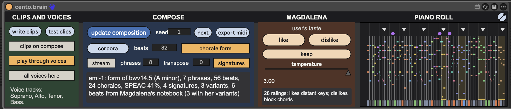
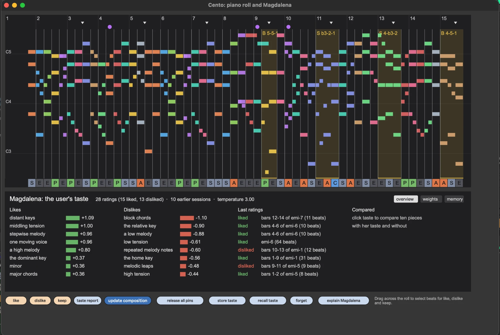
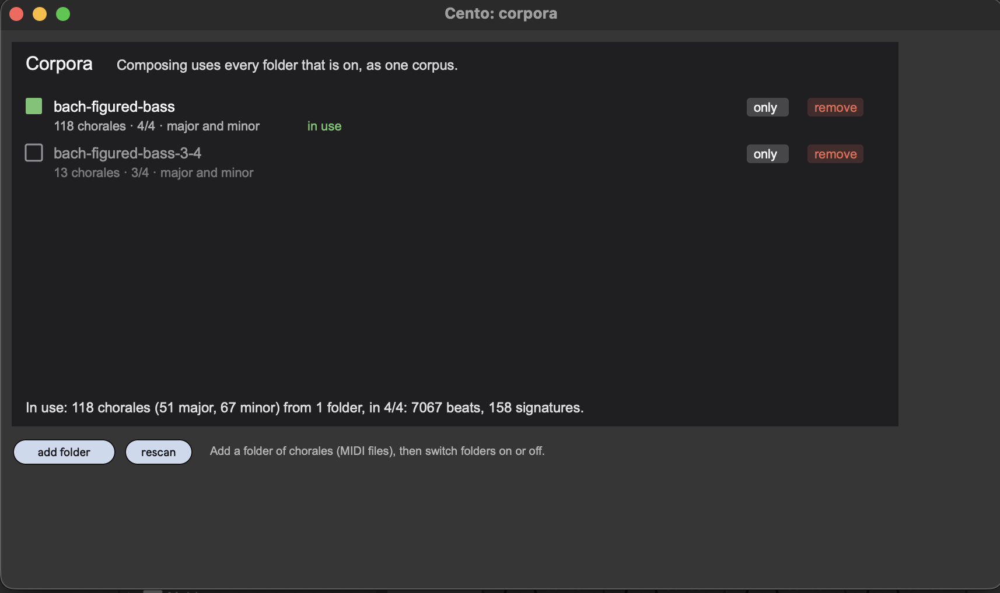

New chorales in the style of J. S. Bach, made from pieces of Bach's own.
Cento has learned Bach's chorales beat by beat. It writes a new chorale by
joining beats from many different chorales, keeping Bach's voice-leading and
the shape of a real chorale: its phrases, cadences and key. Each new piece
takes the form of one of Bach's chorales, and the status line tells you which.
Then there's Magdalena, who learns your taste. Tell her
what you like and dislike as you listen, and later pieces lean toward what you
liked. She's named after Anna Magdalena Bach, a singer and the copyist of much
of Bach's music.
Cento is an independent project, inspired by David Cope's
books on musical intelligence. It isn't affiliated with him.
Which one did you download?
Cento for Live: two devices and a demo set for Ableton
Live 12 Suite (or Live 12 Standard with Max for Live), version 12.2.1 or
later.
Cento for Max: a patch for Max 9. Max is a free download,
and Cento runs in it without a paid license.
Both have been tried on macOS only. Start with step 1, then follow the steps
for your version.
1. Put the Cento folder in Documents
Double-click the zip you downloaded, if it isn't unzipped already. A
folder opens.
Inside it, find the folder named Cento. Drag it onto
Documents in the sidebar of the Finder window.
Cento looks for this folder every time it opens. It holds Bach's chorales,
and later your settings and everything Magdalena learns. Keep its name:
Cento.
Updating from an earlier version? Keep the Cento folder you
already have: it holds your settings and Magdalena's memory.
2a. Cento for Live: play the demo
In the unzipped folder, open Cento Demo Project and
double-click Cento Demo.als. Live opens a set with five
tracks: Cento, which composes, and Soprano,
Alto, Tenor and Bass, which play the four
voices.
If macOS asks whether Live may access files in your Documents folder,
click Allow.
Press Live's Play button (or the space bar). The piece starts at the next
bar, and the piano roll on the right follows along.
For a different piece, click next.
In your own sets: the two devices are in the
Devices folder. Drag cento.brain.amxd onto a
MIDI track. Then drag cento.voice.amxd onto four MIDI tracks
named Soprano, Alto, Tenor and Bass, each
with an instrument on it. The track names tell each voice device which part to
play. Tip: drag the Devices folder into Live's browser, under
Places, to have them at hand.
2b. Cento for Max: open the patch
Max 9. If you don't have it, download it from
cycling74.com/downloads and
install it. You don't need to buy a license: without one, Max still opens and
runs patches. (A license is only needed to save changes to patches.)
In the unzipped folder, open Cento Patch and double-click
cento.maxpat. Max opens it, and Cento composes a piece. (The
other files in that folder are its parts. Keep them together, and open only
cento.maxpat.)
If macOS asks whether Max may access files in your Documents folder, click
Allow.
Click the green play. If you hear nothing, set
Output to AU DLS Synth 1 (the Mac's own
instruments) and check the Mac's volume.
For a different piece, click next.
You can keep the Cento Patch folder anywhere, for example in
Documents next to the Cento folder.
3. A quick tour
This is Cento in Live. The Max version looks the same, except for its left
part (see below the list).

12345678910
The cento.brain device. Rest the mouse on any control to read what
it does: in Live, open the Info View first (the ? at the
bottom left of Live's window).
1play through voices: when it's
on, the piece plays through the four voice tracks whenever Live plays.
write clips, above it, writes the piece as MIDI clips on
those tracks, so you can edit it like any clip.
2update composition composes
the piece again, with your settings and Magdalena's taste as they are
now.
3seed picks the piece: the same
seed always gives the same piece. next moves on to the next
seed. export midi saves the piece as a MIDI file.
4corpora chooses which of Bach's
chorales Cento composes from (see step 5). beats sets the
shortest length of a piece, and chorale form keeps the phrase
plan of a real chorale.
5The status line says what Cento
just made: which chorale's form it took, how many chorales it drew on, and how
much of it came from Magdalena's notebook.
6like and
dislike tell Magdalena what you think (see step 4).
7keep puts what you're hearing
into Magdalena's notebook: music of her own that later pieces can draw
on.
8temperature sets how much
chance still plays. At 0, Magdalena makes only her favorite choices; at 1,
it's as if she weren't there; up to 3, things get more adventurous. Under it,
her taste in one line.
9The piano roll shows the piece
(see "Reading the piano roll" below).
10↗ opens the large window: a
big piano roll and Magdalena's taste in full.
In Cento for Max, the left part is PLAY:
the green play button (it turns red and says stop),
bpm for the tempo, the speaker for audio,
Output for where the music goes, and
plug-in instruments with set up… to play
the voices through your own AU or VST3 instruments. more
features… opens a few extras: a blind listening test (can your
friends tell Bach from Cento?), loading a single chorale, and a test
phrase.
4. Teach Magdalena your taste
Listen to a piece. When you hear something you like or dislike, click
like or dislike. She rates the whole piece,
or the stream phrase that's playing.
To rate just a passage, drag across those beats in the piano roll first: a
blue band marks them. A click in the roll clears it.
After a few ratings, click update composition or
next. New pieces lean toward the musical features you liked
(high melodies, distant keys, stepwise lines…), always within Bach's
rules.
Click keep on music you'd like to hear more of: it goes
into Magdalena's notebook, and later pieces borrow from it.

1234
The large window, opened with ↗.
1The same piano roll, large: easier for
dragging across beats to rate them.
2Magdalena's taste, in three views.
overview: what she likes and dislikes most, and your latest
ratings. weights: a slider for each musical feature, to set
her taste by hand. memory: her notebook, and snapshots to
roll her back to an earlier taste.
3update composition, as in the
device: hear what your changes did. Beside it, store taste
and recall taste save and load a whole taste as a file, and
forget starts afresh (the old taste is kept as a
snapshot).
4explain Magdalena: who she is
and what she does.
5. Choose the chorales

The corpora window, opened with corpora.
Cento comes with 131 Bach chorales, in two folders:
bach-figured-bass (118 chorales in 4/4) and
bach-figured-bass-3-4 (13 in 3/4). Click a folder's box to
switch it on or off; Cento composes from every folder that's on.
only switches on just that folder, so
bach-figured-bass-3-4 alone gives pieces in 3/4.
add folder adds a folder of your own four-part chorales
(MIDI files).
6. Keep what you make
export midi saves the piece as a MIDI file, to open in
any music program.
In Live, write clips writes it as clips on the voice
tracks. Switch on clips on compose to write every new piece
as clips, so nothing you like is lost.
Reading the piano roll
Each color is one of Bach's chorales: the one that beat came from. Rest the
mouse on a beat to see which chorale and bar it came from.
Numbers along the top are bars. Small triangles mark cadences, where
Bach's phrases pause.
Gold bands are Bach's signatures: cadence formulas found in many
of his chorales, kept whole. "S b3-2-1" means the soprano sings scale steps 3,
2, 1, with a flat 3 (as in minor); "B" is the bass.
Purple dots mark beats where Magdalena added notes of her own.
The letters along the bottom show each beat's job in its phrase:
S statement, P preparation, E extension, A antecedent, C consequent. Rest the
mouse on one to read more.
Where your files are
Everything Cento keeps is in Documents/Cento: the chorales
(in corpus), and your settings and Magdalena's memory (the
cento.*.json files). About this folder.txt in it says
which file is which. Pieces you export go wherever you choose.
More chorales
Cento comes with 131 Bach chorales. The free music21 toolkit has more (296
in 4/4 and 32 in 3/4), for your own use only. Getting them takes a few commands
in Terminal; the steps are on
Cento's
page on GitHub.
Removing Cento
Delete the Cento Patch folder (or the devices and the demo project), and the
Cento folder in Documents.
Known issues
This is a beta, tried on macOS only.
Cento for Live needs Live 12.2.1 or later, which includes Max 9. With an
earlier Live, point Live at a Max 9 installation (Live's Settings, File &
Folder, Max Application).
Cento for Max needs Max 9: it doesn't open in Max 8 or earlier.
Cento is free software under the MIT license
(LICENSE.txt). Its chorales come from the Bach Chorales
Figured Bass dataset (Ju, Yaolong, Sylvain Margot, Cory McKay, Luke
Dahn, and Ichiro Fujinaga, 2020, ISMIR), under the Creative Commons
Attribution 4.0 license: see Cento/corpus/README.md. Cento
implements ideas from David Cope's published books on Experiments in
Musical Intelligence and Emily Howell.
github.com/nnokes/cento